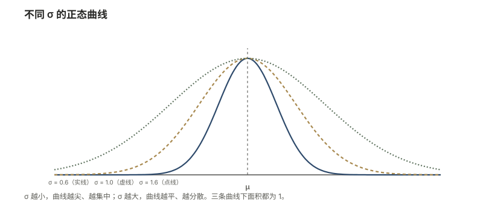
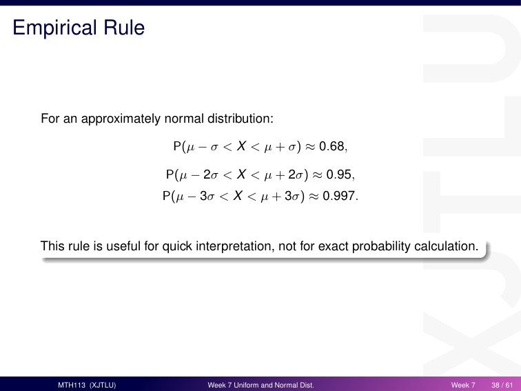

MTH113 · 第 7 章
均匀与正态分布
Uniform & Normal Distributions
虚线下划线为术语；悬停查看中文、英文与释义，完整词典见“术语”。
本章目录
本讲进入命名连续分布：先复习“概率即面积”，再完整处理均匀分布的 PDF、CDF、均值、方差与分位数，最后引入正态分布并用标准化 Z = (X−μ)/σ 把任意正态概率化为标准正态概率。
本章要点
- 连续变量的概率是密度曲线下的面积，单点概率为 0，端点是否包含不影响结果。
- PDF 必须非负且全轴积分为 1；密度高度可以大于 1。
- 均匀分布 X ~ Uniform(a, b)：f(x) = 1/(b−a)，F(x) = (x−a)/(b−a)。
- 均匀分布 E(X) = (a+b)/2，Var(X) = (b−a)2/12，第 p 分位数为 a + p(b−a)。
- 任意连续分布都可用 P(a<X<b) = F(b)−F(a) 与生存函数 S(x) = 1−F(x)。
- 正态分布 X ~ N(μ, σ2)：μ 控制位置，σ 控制离散程度，曲线关于 μ 对称。
- 标准化standardization Z = (X−μ)/σ ~ N(0,1)，用 Φ(z) 查表或计算。
- Φ(−z) = 1 − Φ(z)；经验法则 68%–95%–99.7% 只用于快速判断。
7.1 连续概率回顾：面积、PDF 与 CDF
连续随机变量的可能取值填满区间，概率对象不是单点而是区间：
密度高度本身不是概率，只有面积才是概率。密度值可以大于 1，只要总面积为 1。合法 PDF 的两条要求是 f(x) ≥ 0 与 ∫−∞∞f(x)dx = 1，这正是离散情形 p(x) ≥ 0 与 Σp(x) = 1 的连续版本。
连续变量 P(X = a) = 0，所以
端点是否包含只改变一条零宽度的线。CDF 定义为 F(x) = P(X ≤ x) = ∫−∞xf(t)dt，于是 P(a < X < b) = F(b) − F(a)。当 F 可导时 f(x) = F′(x)；F 非减，左端为 0、右端为 1。
讲义建议养成“先画图”的习惯：标出支撑集、密度曲线、所求区间或尾部，再判断是否用补集。一张草图能避免大量代数错误。
W7 p.5–10
7.2 均匀分布：密度与区间概率
均匀分布uniform distribution建模在一个区间内处处等可能的取值。例：班车完全准点、乘客随机到达时的等车时间；在舍入区间内均匀分布的测量值；软件生成的 0 到 1 随机数。密度是平的，因为任何等长子区间都不比其他子区间更受偏爱。
若 X ~ Uniform(a, b)，则
矩形面积 (b−a) × 1/(b−a) = 1，所以合法。对 a < c < d < b，
概率与区间长度成正比。例 X ~ Uniform(2, 5)：P(3 < X < 4.5) = (4.5−3)/(5−2) = 1.5/3 = 0.5。
班车例：X ~ Uniform(0, 10)，f(x) = 1/10。则 P(X < 3) = 0.30；P(4 < X < 8) = 0.40；P(X > 7) = 1 − F(7) = 1 − 0.7 = 0.30。
Clean vector two-panel figure for Uniform(0,10): left a flat density at height 0.1 from 0 to 10 with the region between 4 and 8 shaded and labelled P(4 < X < 8) = 0.4; right the CDF as a straight line from 0 at x=0 to 1 at x=10. Axes labelled x, f(x) and F(x). Flat 2D, thin 1.5 px strokes, muted slate blue and warm grey palette, white background, English labels only, no cartoon, no gradient, no shadow.
W7 p.12–14、17
7.3 均匀 CDF、均值、方差与分位数
对 X ~ Uniform(a, b)，
在支撑集内，F 是一条直线：F(x) = ∫ax1/(b−a)dt = (x−a)/(b−a)。
均值与方差为
例 X ~ Uniform(2, 5)：E = 3.5，Var = 9/12 = 0.75。
分位数解 F(xp) = p：
例 X ~ Uniform(0, 10)，求 c 使 P(X < c) = 0.90：c/10 = 0.90，c = 9。Uniform(20, 40) 的 75 百分位为 20 + 0.75(20) = 35。
快速检查：X ~ Uniform(12, 20)，密度 1/8；P(14 < X < 18) = 4/8 = 0.5；F(17) = 5/8 = 0.625；E = 16；SD = 8/√12 ≈ 2.31。
方差公式也可由 E(X2) 推出：E(X2) = (1/(b−a))∫abx2dx = (a2+ab+b2)/3，再减 [(a+b)/2]2，化简得 (b−a)2/12。直观上区间越宽方差越大；分母 12 来自二次积分的平均效果，与样本方差的 n−1 不是同一来源，不要混淆。
W7 p.15–19、22
7.4 密度可以大于 1，以及均匀模型的前提
令 X ~ Uniform(0, 0.2)，则 f(x) = 1/0.2 = 5。密度高度 5 看似违反“概率不超过 1”，但 ∫00.25dx = 1，合法。概率是面积，不是高度；只有在宽度为 1 的区间上，密度数值才恰好等于概率。
均匀模型假设：区间 [a, b] 固定且有限；任何等长子区间概率相同；区间内部没有聚集或趋势。若班车会延误、乘客会挑时间到达，或存在高峰，真实等待时间就不均匀。模型批评（model criticism）是统计建模的一部分，不能因为公式简单就忽略假设。
“均匀”也不等于“随机数一定均匀”。软件生成的 0 到 1 随机数在理论上近似 Uniform(0,1)，但真实测量值往往有舍入、量程限制或人为取整，需要先看直方图再决定。
W7 p.20–21
7.5 一般连续 CDF 与生存函数
公式 P(a < X < b) = F(b) − F(a) 对任何连续分布都成立，只要 F 已知。例：若 F(x) = 1 − e−x/4（x ≥ 0），则 P(2 < X < 6) = (1 − e−6/4) − (1 − e−2/4) = e−0.5 − e−1.5。这里只用到 CDF 相减，不需要知道密度的具体形式。
右尾概率常称为生存函数survival function：
它在等待时间与寿命问题中尤其有用：S(t) 表示元件寿命超过 t 的概率。对 P(X > c)，直接用 1 − F(c) 比积分尾部更快。
CDF 与生存函数的互补关系也提供了检查手段：F(x) + S(x) = 1；若算出两者之和不为 1，说明某一步代数或分段写错。
W7 p.23–24
7.6 连续期望、方差与反 CDF
连续期望与方差仍为
均匀均值的推导：E(X) = (1/(b−a))∫abx dx = (b2−a2)/[2(b−a)] = (a+b)/2。方差先算 E(X2) = (a2+ab+b2)/3，再减均值平方，得 (b−a)2/12。
反 CDFinverse CDF：若 F 连续且严格递增，第 p 分位数 xp 满足 F(xp) = p，等价于 xp = F−1(p)。它用于求百分位、风险阈值与模拟。均匀分布的反 CDF 最简单：xp = a + p(b−a)。
注意：反 CDF 存在的前提是 F 在该区间上可逆；若 F 有平台（离散分布），分位数要按“最小 k 使 F(k) ≥ p”定义，不能直接求逆。
W7 p.25–29
7.7 正态分布：密度与参数含义
正态分布normal distribution常见，因为许多测量围绕中心聚集；许多小的独立变异源相加后近似正态；抽样分布常近似正态；它也能近似许多实际数据分布。但讲义提醒：不是每个钟形直方图都精确正态，也不是每个数据集都该用正态模型。
若 X ~ N(μ, σ2)，密度为
且 E(X) = μ，Var(X) = σ2。μ 控制中心位置：改变 μ 使曲线左右平移。σ 控制离散程度：σ 越大，曲线越宽越低；σ 越小，曲线越窄越高。曲线关于 μ 对称，因此 P(X < μ) = P(X > μ) = 0.5。
记号陷阱：N(μ, σ2) 的第二个参数是方差，不是标准差。若题目写 X ~ N(20, 9)，则 σ = 3；若写 N(20, 32)，σ 也是 3。读题时先确认括号里是 σ 还是 σ2。

绘图提示词
Clean vector plot of three normal density curves centred at zero with standard deviations 0.5, 1 and 2, drawn in three muted tones, showing that larger sigma gives a wider and lower curve while all curves remain symmetric about zero. Axes labelled x and f(x), legend sigma = 0.5, sigma = 1, sigma = 2. Flat 2D, thin 1.5 px strokes, muted slate blue, warm grey and sand palette, white background, no cartoon, no gradient, no shadow.
W7 p.31–35
7.8 标准正态、Φ(z) 与经验法则
标准正态分布standard normal distribution是 Z ~ N(0, 1)，密度记 φ(z) = (1/√(2π))e−z2/2，CDF 记
Φ(z) 没有初等闭式，必须查表、用计算器或软件。考试通常给表或给关键值。
对称性给出三条常用恒等式：
例：Φ(1.96) = 0.975，则 P(−1.96 < Z < 1.96) = 2(0.975) − 1 = 0.95。
经验法则empirical rule：对近似正态的分布，μ ± σ 内约 68%，μ ± 2σ 内约 95%，μ ± 3σ 内约 99.7%。它适合快速判断，不适合替代精确计算；考试若要求概率，仍要标准化后查 Φ。

W7 p.36–38
7.9 标准化与正态概率计算
若 X ~ N(μ, σ2)，则
z 分数z-score表示 X 在均值之上或之下多少个标准差；反解为 x = μ + zσ。计算 P(a < X < b) 的模板：
例 1：X ~ N(100, 152)，求 P(85 < X < 130)。z1 = (85−100)/15 = −1，z2 = (130−100)/15 = 2。P = Φ(2) − Φ(−1) = 0.9772 − 0.1587 = 0.8185。
例 2（右尾）：X ~ N(50, 52)，P(X > 60)：z = 2，P = 1 − Φ(2) = 1 − 0.9772 = 0.0228。
例 3（左尾）：同分布，P(X < 43)：z = −1.4，P = Φ(−1.4) = 1 − Φ(1.4) = 1 − 0.9192 = 0.0808。
例 4（中间）：X ~ N(12, 22)，P(10 < X < 15)：z = −1 与 1.5，P = 0.9332 − 0.1587 = 0.7745。
软件只作核对：R 用 pnorm，Excel 用 =NORM.DIST(x, mean, sd, TRUE)。注意 R 的 sd 参数是标准差，不是方差。
W7 p.39–44
7.10 正态模型检查与制造综合例
使用正态模型前先问：变量是否连续或近似连续？分布是否大致对称单峰？是否有强异常值或重尾？情境是否支持“围绕中心随机波动”？正态曲线是模型，不是保证。强偏态、不能取负却大量聚集在 0 附近、多峰、尾部远厚于正态，都会使正态模型不合适。
综合例：某工序轴径近似 N(20.00, 0.042) mm，合格范围 19.94 < X < 20.08。
约 91.04% 的轴径合格。若想提高合格率，可以移动 μ 使区间更居中，或减小 σ 使标准化上下限离 0 更远、中心面积更大。前者改变位置，后者改变离散程度，两者作用机制不同。
W7 p.47–48
7.11 常见错误与公式总表
本讲最典型的错误是把 N(μ, σ2) 的第二个参数当成标准差；其次是不标准化就用 Φ(z)；再其次是混淆 P(X < 5) 与 P(X ≤ 5)（连续情形相等）；还有把密度高度当成概率、忘记均匀分布方差分母为 12。
| 对象 | 公式 |
|---|---|
| 均匀 PDF | f(x) = 1/(b−a)，a < x < b |
| 均匀 CDF | (x−a)/(b−a) |
| 均匀均值 / 方差 | (a+b)/2，(b−a)2/12 |
| 均匀分位数 | a + p(b−a) |
| 连续区间概率 | F(b) − F(a) |
| 生存函数 | S(x) = 1 − F(x) |
| 正态标准化 | Z = (X−μ)/σ |
| 正态区间概率 | Φ((b−μ)/σ) − Φ((a−μ)/σ) |
| 对称性 | Φ(−z) = 1 − Φ(z) |
W7 p.49–50、59–60
7.12 标准正态与正态概率的自测题
讲义最后给出一组板演题，用来检查是否真正掌握标准化与查表。第一组：已知 Φ(1.25) = 0.8944，求 P(Z < 1.25)、P(Z > 1.25)、P(−1.25 < Z < 1.25)。答案分别为 0.8944、1 − 0.8944 = 0.1056、2(0.8944) − 1 = 0.7888。三问共用一条对称性，不必分别查表。
第二组：X ~ N(40, 62)，求 P(34 < X < 49)。标准化得 z = −1 与 1.5，故概率为 Φ(1.5) − Φ(−1) = 0.9332 − 0.1587 = 0.7745。第三组：X ~ N(100, 122)，求 P(X > 124)：z = 2，概率 1 − Φ(2) = 0.0228。
第四组回到密度：f(x) = kx（0 < x < 2），由 ∫02kx dx = 2k = 1 得 k = 1/2；若 f(x) = x/2，则 F(x) = x2/4（0 < x < 2），P(1 < X < 1.5) = F(1.5) − F(1) = 2.25/4 − 1/4 = 0.3125。第五组：X ~ N(20, 9) 的标准差是 3，因为括号内是方差；这是最常见的记号陷阱。
把五组题放在一起看，本讲的工具其实只有三件：均匀分布用长度比；一般连续分布用 F(b) − F(a)；正态分布先标准化再查 Φ。其余都是代数与分段细节。
W7 p.51–60